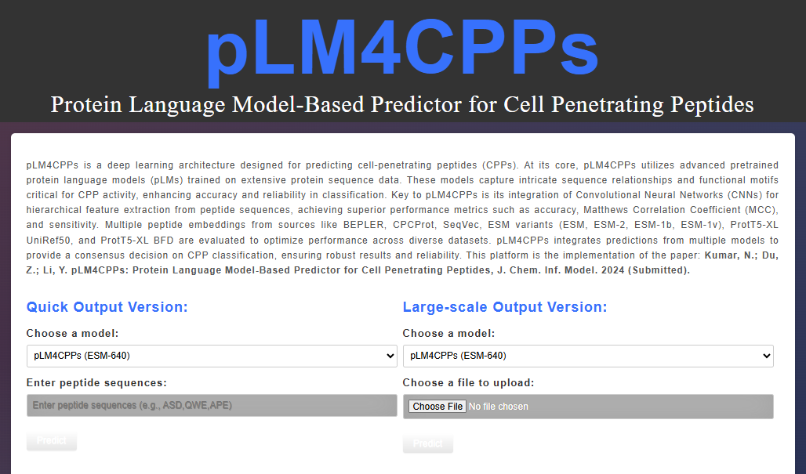

AI Predictor
Developer
pLM4CPPs-Protein Language Model-Based Predictor for Cell-Penetrating Peptides
pLM4CPPs is a deep learning framework and web server for predicting cell-penetrating peptides. The platform integrates protein language model embeddings with convolutional neural networks to support high-performance CPP prediction and peptide bioactivity analysis.
My contribution: Developed the prediction framework, model workflow, web-server concept, and GitHub-accessible implementation for CPP prediction using protein language model embeddings.